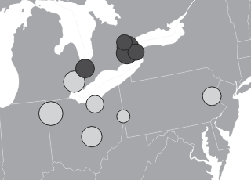
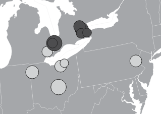
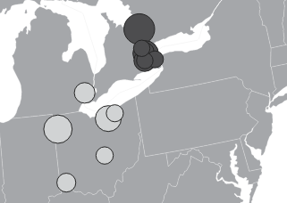

We have made a series of data downloads available in both raw data form (CSV) and in a mappable form (Shapefile). To download, click on the link next to the download you would like. Please contact us if you have any questions.
Downloads
Raw Data: All hazardous waste imported to the United States for 2007, 2009, 2010, 2011, and 2012, or exported from the U.S. from 2005-2009, 2011-2012. [.csv]
Processed Data: All hazardous waste imported to the U.S. from Canada or Mexico for 2007, 2009, 2010, 2011, and 2012. [.csv] [.shp]
Metadata: Descriptions of each attribute recorded. [.doc]
2010 U.S. Imports: All 2010 hazardous waste manifests (imports) and any supplementary documents sent from the U.S. EPA, in a folder of PDFs. [.zip] See mapped example (data derived from raw data, coded from these files). Note: Only the white points are available in this download since the 2010 export data is incomplete at this time:

2011 U.S. Imports and Exports: All 2011 hazardous waste manifests (imports), annual reports (exports), and any supplementary documents sent from the U.S. EPA, in a folder of PDFs. [.zip] See mapped example (data derived from raw data, coded from these files):

2012 U.S. Imports and Exports: All 2012 hazardous waste manifests (imports), annual reports (exports), and any supplementary documents sent from the U.S. EPA, in a folder of PDFs. [.zip] See mapped example (data derived from raw data, coded from these files):

Supplemental Data
Our dataset may be supplemented by additional data sources maintained by other organizations, see a few below. Because we do not maintain these sources ourselves, we cannot guarantee their availability.
Environment and Climate Change Canada: Information on proposed and actual hazardous waste imports and exports to and from Canada.
EPA’s CHIP (Chemical Hazard Information Profile): Data on the hazard levels of the materials in the dataset.
Eurostat: Data on transboundary hazardous waste movement in the European Union.
UN Comtrade: United Nations international trade database.
U.S. Census American FactFinder: Demographic information for the United States.
U.S. EPA ECHO (Enforcement and Compliance History Online): Facility-level compliance data